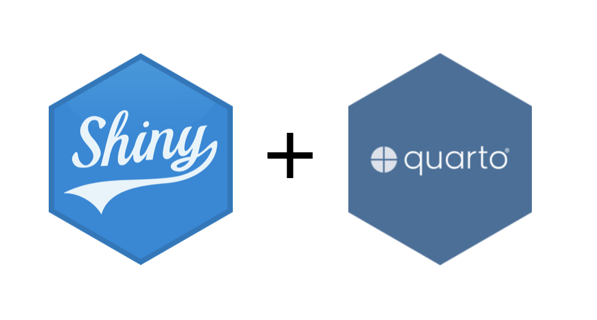

library(sf)
precincts_sf <- st_sf(votes = c(40, 30, 60),
geometry = st_sfc(
st_polygon(list(rbind(c(0,1), c(1,1), c(.5,.5), c(0,1)))),
st_polygon(list(rbind(c(0,0), c(.5,0), c(.5,.5), c(0,1), c(0,0)))),
st_polygon(list(rbind(c(.5,0), c(1,0), c(1,1), c(.5,.5), c(.5,0))))),
crs = 3310)
districts_sf <- st_sf(district = c("North", "South"),
geometry = st_sfc(
st_polygon(list(rbind(c(0,.5), c(1,.5), c(1,1), c(0,1), c(0,.5)))),
st_polygon(list(rbind(c(0,0), c(1,0), c(1,.5), c(0,.5), c(0,0))))),
crs = 3310)Spatial Interpolation
From precinct votes to a dashboard
Last Time
- Gerrymandering packs and cracks voters.
- The mean-median score detects skew.
- The efficiency gap compares wasted votes.
- An ensemble shows what fair maps look like.
Key Ideas for Today
- Interpolation splits by area.
- Votes are extensive.
- SR precincts have shapes.
- Dashboards give a glance.
- Cards fill rows and columns.
Your Turn

Question: What is the total value of the pink polygon on the right?
01:30
Agenda
- Spatial Interpolation
- Project: Gerrymandering
- Old map analysis
- New map analysis
- Dashboards
Spatial Interpolation
Area-weighted Interpolation
Estimates a value for each target polygon by giving it, from each source polygon it overlaps, the share of the source’s value equal to the share of the source’s area that falls inside the target. Assumes each value is spread evenly over its source.
st_interpolate_aw(x, to, extensive)
A toy map
A toy map
By hand
st_intersection() cuts one layer by another: each piece keeps the columns of both.
By hand
Or, in one step
Votes are counts: they’re spatially extensive (split them with the area). A rate or a share is intensive.
The result keeps the target geometries but drops district; add it back with interp$district <- districts_sf$district (rows come back in the same order).
Guess the Metaphor
Spatial interpolation is like a tea valley: when a new path cuts through the bushes (a new district line through the precincts), the harvest on each side is its share of every bush it crosses, as long as the leaves grow evenly over each bush (votes are spread evenly over each precinct).
Project: Gerrymandering
Project: Gerrymandering
Research question:
Will the adoption of the new district map lead to an increase in partisan advantage relative to 2024? If so, by how much?
Your answer will take the form of a dashboard.
Prop 50 Dashboard
Your final deliverable is a dashboard with six pages:
- Results (opens first): both maps, and seats, mean-median score, and efficiency gap for 2024 and the re-run
- About the Data
- Data Cleaning
- Exploratory Data Analysis
- Measuring Partisan Advantage
- Re-running the 2024 Election
Old Map Analysis

Question: Sketch the sf data frame needed to make this dashboard. Be sure to note:
- Number of rows
- Names and types of columns
03:00
A tale of two precinct types
SV Precincts
- Created by counties each election
- Two counties might use the same precinct name
- Unique ID: SVPREC x FIPS
- May not correspond to geographic area Example:
- SVPREC: 30010 holds the vote by mail
- SVPREC: 30010A holds the in-person votes
This is why we won’t have shapefiles for every precinct
A tale of two precinct types
SR Precincts
- Created by the statewide data base to have a stable precinct unit from election to election.
- One SR precinct is generally an aggregation of smaller SV precincts.
We can get both votes and shapefiles for SR precincts.
How to construct the old map df
Ingredients:
- Statement of Vote, by SR precinct
- 2024 district shapefile

How to construct the old map df
Ingredients:
- Statement of Vote, by SR precinct
- 2024 district shapefile
- California has a primary system where the two candidates with the most votes advance to the general election regardless of party.
- How to deal with this effect in your analysis is up to you.
Old Map New Map

Approach A: Area-weighted Interpolation
Assume voters are spread evenly across each SR precinct, then use st_interpolate_aw() with extensive = TRUE to move each precinct’s votes into the new districts by area.
How to construct the new map df
Approach A
Ingredients:
- Statement of Vote, by SR precinct
- SR precinct shapefiles
- Proposed map shapefiles
But wait… we have more data
A tale of two precinct types and a block
Census Block
- Defined by the census bureau as the smallest geographic unit on which they gather data.
- Often a city block but always geographical.
- We don’t have voting data but we do have # registered voters.
How can this be used?
Approach B: Proportional allocation
How to construct the new map df
Approach A
Ingredients:
- Statement of Vote, by SR precinct
- SR precinct shapefiles
- Proposed map shapefiles
Approach B
Ingredients:
- Statement of Vote, by SR precinct
- SR precinct to 2020 Block proportional mapping
- Block to new district mapping
Both: the proposed map shapefile, to draw the Results map.
Dashboards
Data Dashboard
An interactive display of selected statistics and plots that lets the user quickly monitor, explore, and understand patterns in data.
Used for:
- Real-time Monitoring
- Data Exploration
Tools for Dashboards

Workshop
Links:
Please open each of the following in a different browser tab.
Documentation: https://quarto.org/docs/dashboards/
The live example will log you into RStudio and give you access to
demo-dashboard.
Anatomy of a Dashboard
Navbar
Layout
- Define new row with
## Row, new column with## Column - Nest one inside the other using
###for child (e.g.### Column) - Defaults to row-by-row layout. Change by using
Layout by row
Layout by column
Your turn
- Add four empty cards to your document by inserting four blank code cells at the bottom.
- Arrange them in a 2 x 2 grid layout.
02:30
Data Display
Plots
You can insert graphics from ggplot, base R, or an interactive library. It can be helpful to tweak fig-width and fig-height.
Tables
- Static table:
gt::gt(),knitr::kable(). - Interactive table:
DT::datatable()
kable()
| mpg | cyl | disp | hp | drat | wt | qsec | vs | am | gear | carb | |
|---|---|---|---|---|---|---|---|---|---|---|---|
| Mazda RX4 | 21.0 | 6 | 160 | 110 | 3.90 | 2.620 | 16.46 | 0 | 1 | 4 | 4 |
| Mazda RX4 Wag | 21.0 | 6 | 160 | 110 | 3.90 | 2.875 | 17.02 | 0 | 1 | 4 | 4 |
| Datsun 710 | 22.8 | 4 | 108 | 93 | 3.85 | 2.320 | 18.61 | 1 | 1 | 4 | 1 |
| Hornet 4 Drive | 21.4 | 6 | 258 | 110 | 3.08 | 3.215 | 19.44 | 1 | 0 | 3 | 1 |
| Hornet Sportabout | 18.7 | 8 | 360 | 175 | 3.15 | 3.440 | 17.02 | 0 | 0 | 3 | 2 |
| Valiant | 18.1 | 6 | 225 | 105 | 2.76 | 3.460 | 20.22 | 1 | 0 | 3 | 1 |
datatable()
Value boxes
You can create a dynamic value box using the following.
Blank Cards
Your Turn
Display the data on earthquakes in your dashboard according to the following layout.
06:00
Pages
Split your dashboard into multiple pages by adding level one headers with the page name. This example uses two pages, “Bills” and “Flippers”, that will be linked in the navbar.
Key Ideas for Today
- Interpolation splits by area.
- Votes are extensive.
- SR precincts have shapes.
- Dashboards give a glance.
- Cards fill rows and columns.
For Next Time
- Sign up for Quiz 5 (11/2-11/3).
- Finish PS 5, due 10/31.
- Project Studio 4 is the week of 11/2.